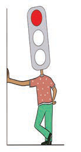
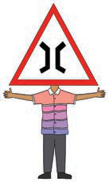
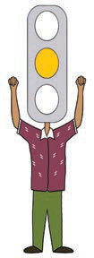
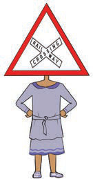
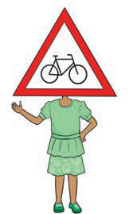

Red traffic light. It tells people and vehicles to stop.I am a red traffic light. When I turn on, people, cars, motorcycles and bicycles stop.

Narrow bridge sign. Be careful when crossing here.I am a narrow bridge. Be careful when using me.
 Road work ahead sign. Pass carefully near this area.
Road work ahead sign. Pass carefully near this area.
I am a road work ahead sign. Take caution when passing by.
 Bus stop sign. People wait here to get on or off a bus.
Bus stop sign. People wait here to get on or off a bus.
I am a bus stop sign. Use me to get in and out of the bus.

Yellow traffic light. Get ready to stop or go.I am a yellow traffic light. When I turn on, get ready to either pass or stop.

Railway crossing sign. Look and be careful before crossing.I am a railway crossing sign. When you see me, be careful before crossing the road.

Cyclist lane sign. Use this way when riding a bicycle.I am a cyclist lane sign. Use me when riding a bicycle.